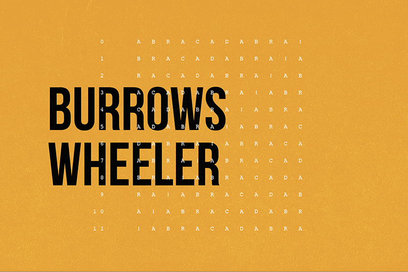

Computer Science
AutoComplete

Autocomplete finds all the terms beginning with a given prefix, in descending order by weight. It functions very similar to the search bar on the Google search engine. I implemented the program by sorting the terms by query string, using binary search to find all query strings that start with a given string, and sorting the matching terms by weight.
8puzzle

8puzzle solves a slider puzzle using the A* search algorithm. The puzzle is played on a nxn grid with n2 - 1 square tiles labeled 1 through n2 - 1, plus a blank square. The goal is to rearrange the tiles in row-major order with as few moves as possible. I implemented the program by creating a Board class that models a nxn board, calculates its hamming & manhattan distances, find possible neighboring boards, and determines whether a board is solvable. Then, I implemented the A* searching algorithm to solve the puzzle.
Seam Carving

Seam Carving is an image resizing technique where the image is reduced in size by one pixel at a time. The algorithm finds a seam in the image with the lowest pixel energies so when the seam is removed, the image seems intact. I implemented the algorithm by fisrst calculating the pixel of each seam, found the vertical seam of minimum total energy, and then removed the seam. To resize the image horizontally, i transposed the picture.
Burrows Wheeler

Burrows Wheeler implements the Burrows-Wheeler data compression algorithm and it outcompresses gzip and PKZIP. The algorithms utilizes three smaller algorithmic components. Burrows-Wheeler transform transforms a typical English text file to a text file in which sequences of same character occur near each other many times. Move-to-Front encoding converts the transfrom file into a text file in which certain characters appear more frequently than others. Finally, Huffman compression compresses the move-to-front file by encoding frquently occuring characters with short codewords and infrequently occuring characters with long codewords.
The images and text in the section above are edited from the 226 class page.
Entrepreneurship
Creativity, Innovation, and Design

In this class, my team and I worked on the wicked-problem as to how to reduce sexual misconduct on campus using the process of Design-Thinking. As a part of this process, we conducted various interviews with many students at Princeton to understand the problem before we attempted to solve it. Through the interviews, we gained valuable insights such as that people don't like being asked for consent but want to be asked for consent and the victims we interviewed didn't necessarily want to punish their offender but rather wanted them to get educated & apologize for their actions. Knowing our insights, we first tried to create a system where offender and victims can engage in a conversation which we learned, through prototyping, wasn't a great idea in case an offender retaliates. Then, we tried to create a system where students could annonymously refer offenders or potential offenders to get educated. However, we learned that wansn't completely legal. Finally, we presented a website that provides sample letters for victims on how to reach out to their offender and how to reach out for support. The project was frustrating and exhausting at times but also very rewarding.